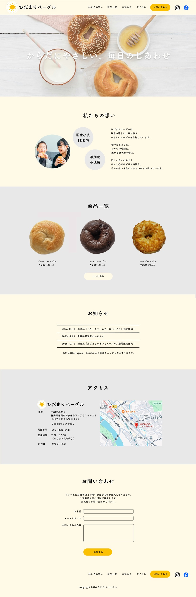

WORKS — LP・Webデザイン
ひだまりベーグル
Works 一覧に戻る

制作背景
地元密着のベーグル専門店を想定した自主制作です。手作り感とこだわりを持つ小規模ベーカリーが、SNSだけでなくWebサイトを通じてブランドの世界観と商品の魅力を伝えるシーンを想定して制作しました。
課題
商品写真を主役にしながらも、素材へのこだわり・ブランドの温度感・アクセス情報まで、一画面のLPで過不足なく伝えること。情報が増えると世界観が崩れやすいため、デザインの統一感を保つことがポイントでした。
アプローチ
ウォームトーンのカラーパレット（ベージュ・テラコッタ・クリーム）で全体を統一し、食欲をそそりながらも「手作りの温かさ」を感じられるトーンに仕上げました。ファーストビューには大きな商品写真を配置し、視覚的なインパクトで世界観を即座に伝えます。
「素材へのこだわり」をテキストパネルとアイコンで補完し、写真と文章のバランスを意識したレイアウトにしました。
工夫した点
英語のサブタイトルと日本語本文の組み合わせで、親しみやすさとブランド感を両立しました。フォントの使い分け（明朝系の見出し×ゴシック系の本文）によって、温かみと清潔感を同時に表現しています。